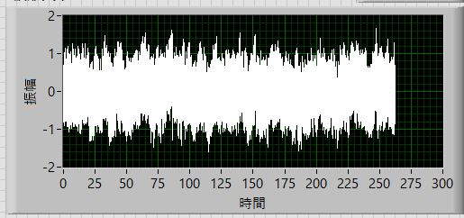
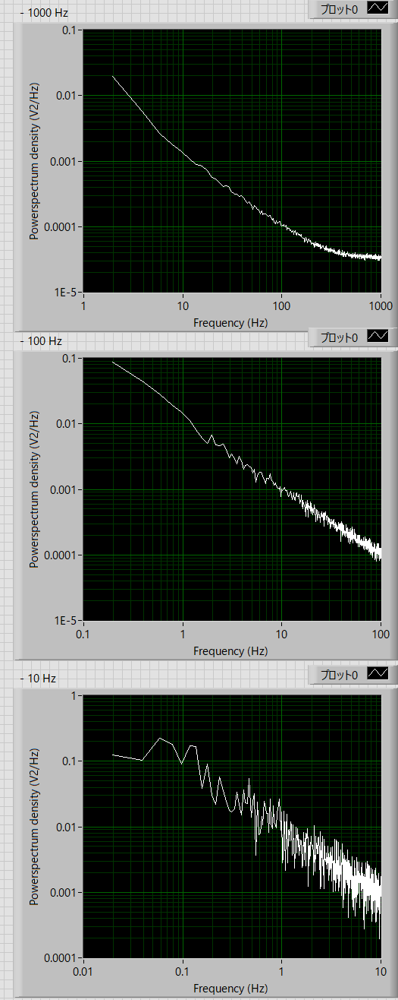
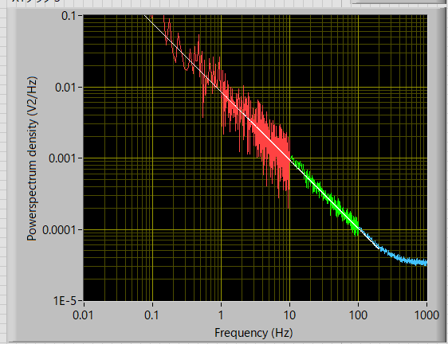

パワースペクトルの実際の作業内容-11
ピンクノイズの場合
では実際に確かめてみましょう．
元データ
ピンクノイズ
実際の波形の時間 (s) ： Stime = 262.144 s
サンプル周波数 (1/s) ： Sfreq = 2,000 kHz
サンプル時間分解能 (s) ： dt = 0.0005 ms
実際の波形の数 ： n = 524288 = 219
FFTサイズ ： 1024

これを，
100-1000 Hz
10-100 Hz
1-10 Hz
で分けて考えてみます．
| 加算平均 | ローパス | 間引き | df | |
| 100-1000 Hz | 512 | - | 0 | 1.95 Hz |
| 10-100 Hz | 51 | 100 Hz | 10 | 0.195 Hz |
| 1-10 Hz | 5 | 10 Hz | 100 | 0.0195 Hz |
このようなパラメータでローパス，間引き，加算平均を掛けてみます．

上から，
100-1000 Hz
10-100 Hz
1-10 Hz
となります．
このデータを各周波数帯で切り取り，融合させると，

という形となり，200 Hzまでのスペクトルを線形近似（対数で）すると，傾きが，
0.958
とほぼ１となり，ピンクノイズを再現できます．
次は，トラップされたビーズのブラウン運動です．